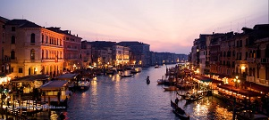

Veneza

Introdução
Localização
Multimédia
Informações
Introdução
Era uma vez, em uma 🏙️ mágica chamada 😜😂🤣, onde todos os 😆😊😃 viviam felizes e sem preocupações.
Um dia, um 🦄✨ apareceu na cidade e trouxe 🎁🎉 para todos os habitantes.
- Era uma vez, em uma 🏙️ mágica chamada Veneza, onde todos os 😆😊😃 viviam felizes e sem preocupações.
- Um dia, um 🦄✨ apareceu na cidade e trouxe 🎁🎉 para todos os habitantes.
- Eles decidiram organizar uma grande 🎊🍕 para comemorar, e todos estavam muito animados!
- Durante a festa, um pequeno 🐶🐾 decidiu subir no 🡠e começou a dançar ğŸ¶.
- Todos ficaram 😲 e começaram a aplaudir. No final, o 🶠ganhou um enorme ğŸ”🟠como prêmio.
- E todos viveram felizes para sempre em sua 🏙️ mágica!
Era uma vez, em uma cidade mágica chamada Risonha, onde todos os habitantes viviam felizes e sem preocupações. Um dia, um unicórnio apareceu na cidade e trouxe presentes e celebração para todos os habitantes.